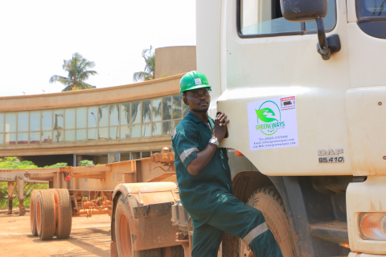

Demande d’information
Contactez nos conseillers commerciaux ou effectuez une demande de cotation gratuite pour le transport et la logistique.

GREENWAYS emploie plus de 200 personnes, ce qui représente le soutient de plus de 200 familles.
La première responsabilité de tous les contributeurs internes est de garantir la pérennité et la continuité de l’entreprise.
La seconde est d’offrir de l’aide à tout collaborateur à des périodes difficiles de sa vie. Un comité de solidarité a été créé afin de travailler main dans la main avec les organisations sociales et de bien être pour générer des fonds dans le but de soutenir les membres des équipes et leur famille lorsque ceux-ci sont dans le besoin.